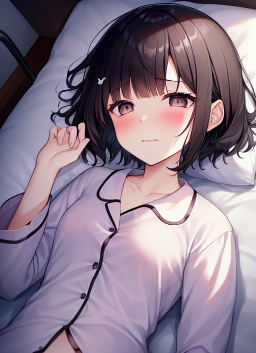

ランナー
燦々と太陽の光が降り注ぐ競技場、そこで一人の選手が軽やかに走っていた。 彼の名前は瀬戸あつき。 今ノリに乗っているランナーで、その実力はオリンピックに出れば入賞確実とまで言われている。 今あつきは、数日後に差し迫った街で行われるマラソン大会に向けて最後の調節をしている。 狙うはもちろん優勝である。
「はぁ・・・はぁ・・・。」
一定のリズムで呼吸しながら、タッタッタッと走るあつき。
と、その時だった。 突然、あつきの目の前に広がる景色がグニャッと歪んだ。
「！？」
突然の事に戸惑ったあつきが立ち止まって辺りを見渡すと、そこは先ほどまで自分が走っていた競技場ではなく、見知らぬ病院の個室だった。 その個室の中には、毛玉の付いた髪留めや赤い手鏡など如何にも女の子が持っていそうな物がたくさんあった。
「何だ・・・ここ・・・？俺は・・・一体どうしてここに・・・？」
知らない内に変な所に来てしまった事に、戸惑いを隠せないあつき。
すると次の瞬間、あつきの身体に考えられない事態が起こった。 なんと、あつきの鍛えに鍛えた身体がシュンシュンと音を立てて小さくなり始めたのだ。
「うわっ！？」
突然小さくなり出した自分の身体に、驚きを隠せないあつき。 しかし、そんなあつきをよそに彼の身体は更に小さくなっていき、それに伴って着ていたウェアはズルッと下がった。 それだけではない。 ガッシリとした胸やお尻はムクムクと膨らんでプルルンと弾み、胴はキュッとくびれる。 更に、頭はツルツルとした肌をした小顔に変化し、目や鼻などの顔を構成するパーツはその顔に見合った可愛らしいものになった。
数分後、あつきの身に起こった摩訶不思議な変化は治まった。 しかしその姿は、先ほどまでの全身隈無く筋肉質だったマラソンマンの姿ではなく、真っ白な入院着を着た薄幸そうな10歳程の女の子だった。
「そ、そんな・・・おれ・・・どうしちまったんだ・・・？」
呆然とするあつきの口から出てくる声も、高い女の子の声に変わっていた。[newpage] 頭を動かして辺りを見渡すと、ベッドの上に名前の書かれていないネームプレートが目に入った。
「何・・・？この・・・ネームプレートはなんなの・・・？・・・・・・・え？」
自然に口から出て来た女の子言葉に戸惑うあつき。
「な、なんでふつうに女の子の話し方が出てくるの・・・？おれは・・・あたしは・・・・・・・あれ？あたしって・・・だれだっけ・・・・・？」
あつきは必死になって自分が何者であるのか思い出そうとしたが、いくら頭を動かしても自分の名前すら思い出せなかった。 するとその時、何も書かれていなかった筈のネームプレートに［瀬戸琴奈］という少女の名前が浮かび上がり、それと同時に（自分の名前は瀬戸琴奈である）という記憶があつきの頭の中にパッと出て来た。
「琴奈・・・あたしの名前は・・・瀬戸琴奈・・・。」
しっかりと憶えるかのように何度もその名を呟くあつき。 すると更に、（自分は病弱）（ずっと病院で過ごしている）（外で遊ぶ事に憧れている）という、［瀬戸琴奈］という少女の記憶が次から次へとあつきの頭の中に入って来た。
「あ・・・そうだ・・・。あたしは・・・ずっとここで静かに過ごしてるんだった・・・・・。ねないと・・・。」
あつきはポツリポツリとそう言うと、ベッドに潜り込んで寝始めた。
それから数日後、街でマラソン大会が行われた。 大会に参加した多くのランナーたちが、晴れやかな笑顔を見せて気持ち良さそうに走っている。 そのマラソン大会の様子を、あつき・・・・・いや、琴奈は病室の窓から羨望の目で眺めていた。
「みんな・・・気持ち良さそうに走ってる・・・。あたしも・・・早く元気になって・・・みんなと同じように走りたいなぁ・・・。」
琴奈は小さくそう呟いた。 その目からは、ツーッと涙が流れて頬を濡らしていた。